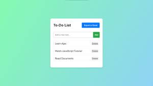
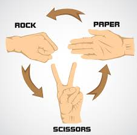

My Projects
Here are some of the projects I have created while learning web development.

To-Do List
A to-do list is more than just a simple reminder; it is a vital psychological tool that helps bridge the gap between intending to do something and actually completing it. By moving tasks from your mind onto paper or a digital app, you reduce cognitive load, freeing up mental energy for creative problem-solving rather than just trying to remember everything. This process leverages the Zeigarnik Effect, a psychological phenomenon where our brains experience tension from unfinished tasks until they are recorded or resolved
Effective lists go beyond just jotting down ideas—they require clear prioritization and actionable steps.
https://github.com/Sachin-Sharma5183
Rock-Paper-Scissor
Rock paper scissors is a simultaneous, zero-sum hand game usually played between two people. It functions as a non-transitive game where each of the three possible choices—Rock, Paper, and Scissors—defeats one other choice and loses to the third.
Rock-paper-scissors is a simultaneous hand game where two players choose between three gestures: rock, paper, or scissors. It operates on a non-transitive logic where each choice defeats one option while losing to the other—rock crushes scissors, scissors cut paper, and paper covers rock. Often used as a fair decision-making tool, it combines basic probability with psychological strategy to break ties or settle disputes.
https://github.com/Sachin-Sharma5183
Wheather App
Modern weather apps have evolved from simple thermometers into high-tech personal assistants that help you plan your day down to the minute. Most top-tier apps, such as The Weather Channel or AccuWeather, rely on a combination of global satellite data and local radar to provide "hyper-local" forecasts. This means instead of getting a generic report for your entire city, you get specific alerts for your exact street, including MinuteCast features that predict exactly when rain will start and stop.
Beyond basic temperature readings, these apps now prioritize environmental health and safety. Features like the Air Quality Index (AQI), UV radiation levels, and pollen counts have become standard, which is especially helpful for people with allergies or those living in urban areas
https://github.com/Sachin-Sharma5183